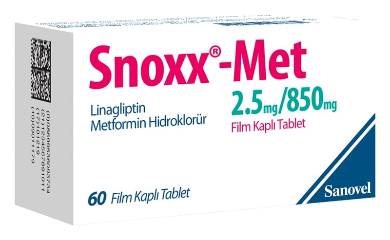

Snoxx-Met 2,5 mg/850 mg Film Kaplı Tablet, 60 Adet

Ne için kullanılır
KT · Bölüm 1İlacınızın ismi SNOXX-MET’tir. Açık turuncu oval, bikonveks film kaplı tablettir. Piyasaya 60 tabletlik ambalajlarda sunulur.
Bu ilaç, iki ayrı etkin madde içerir: Linagliptin ve metformin.
− Linagliptin, “DPP-4 inhibitörleri (dipeptidil peptidaz-4 inhibitörleri)” olarak adlandırılan bir ilaç sınıfına aittir. − Metformin, “biguanidler” olarak adlandırılan bir ilaç sınıfına aittir.
SNOXX-MET etkisini nasıl gösterir? Bu iki etkin madde, “Tip 2 diabetes mellitus” olarak adlandırılan bir şeker hastalığı tipinde, erişkin hastalarda kan şekeri düzeylerini kontrol altında tutmak için birlikte çalışır. SNOXX- MET, diyet ve egzersizle birlikte uygulanmasıyla, yemeklerden sonra salıverilen insülin düzeylerini iyileştirmeye yardımcı olur ve vücudunuz tarafından oluşturulan şeker miktarını düşürür.
SNOXX-MET, tek başına veya şeker hastalığı için kullanılan insülin salgılatıcı oral antidiyabetik veya insülin gibi diğer belli ilaçlarla birlikte uygulanabilir.
Tip 2 diyabet (Tip 2 şeker hastalığı) nedir? Tip 2 diyabette vücudunuz, yeterli miktarda insülin oluşturmaz ve oluşan insülin gerektiği şekilde çalışmaz. Vücudunuz çok fazla şeker de üretebilir. Bu durum ortaya çıkarsa, şeker (glukoz) kanda birikir. Bu birikim, kalp hastalığı, böbrek hastalığı, körlük ve kol veya bacağın kesilmesinin gerekmesi gibi ciddi tıbbi sorunlara yol açabilir.